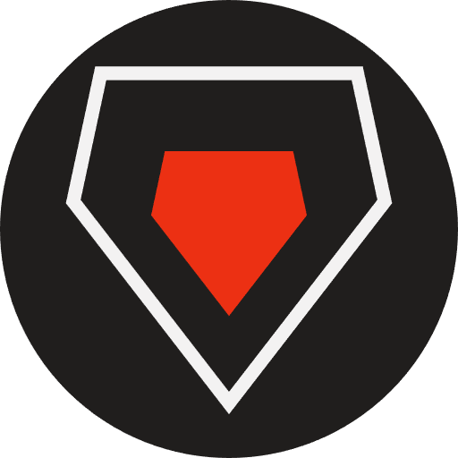

Developers
Who builds it.
Mjerg is one person's project. That is the whole team, and it is not a modest way of saying "a small team".

Ruby
Aubergine-UX · everything
Writes the bot, runs the server, answers the bug reports, drew the shield. Mjerg started in their own community in July 2026 and still lives there, which is why the annoying bugs get fixed first.
Everyone who reports things
Not officially a job
A decent share of what Mjerg does started as someone saying "it would be good if it could..." in the support community. Bug reports with the command and rough timestamp attached are worth more than they sound.
Building your own Osmium bot
Mjerg is not open source, so there is nothing to fork here. Osmium's API is public and unrestricted though, with no approval process and no gated endpoints, so building your own is open to anyone. These are the places to start:
bot-example-js
A working bot in about thirty lines. Start here rather than from scratch.
Building something and stuck on the Osmium side of it? Ask in Osmium's own developer community rather than Mjerg's. Faster answers, and more people who have hit the same thing.